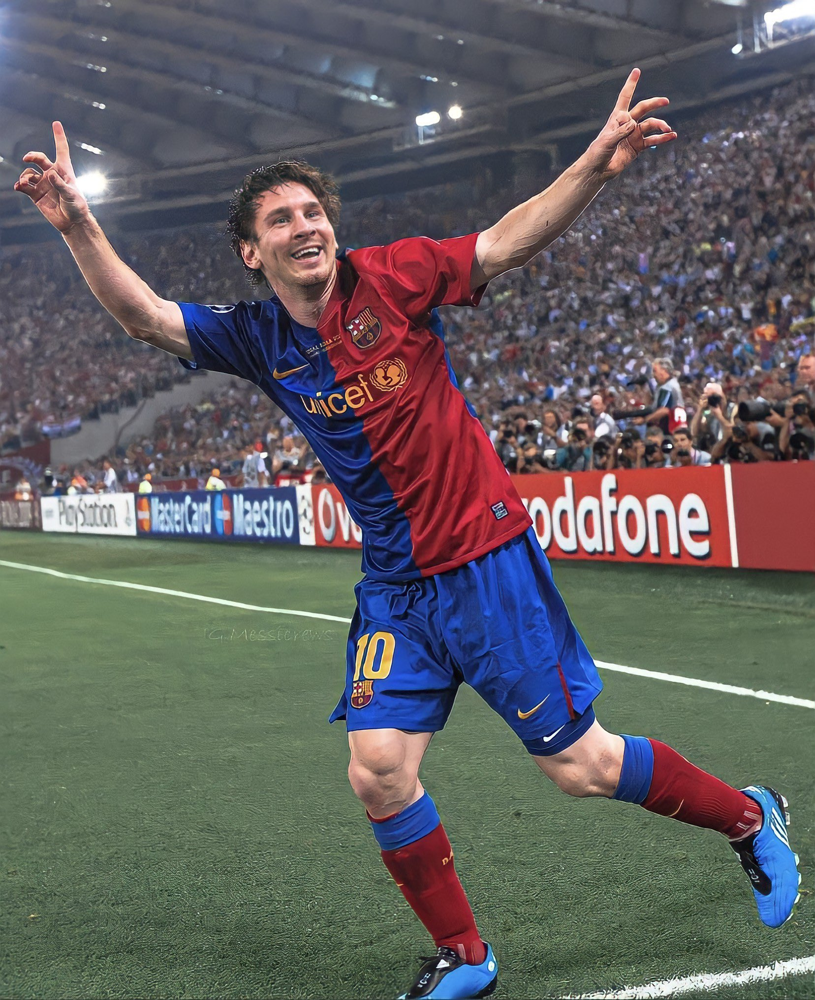
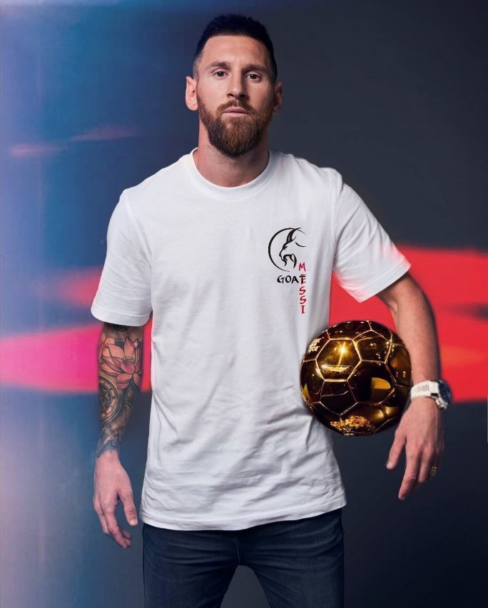
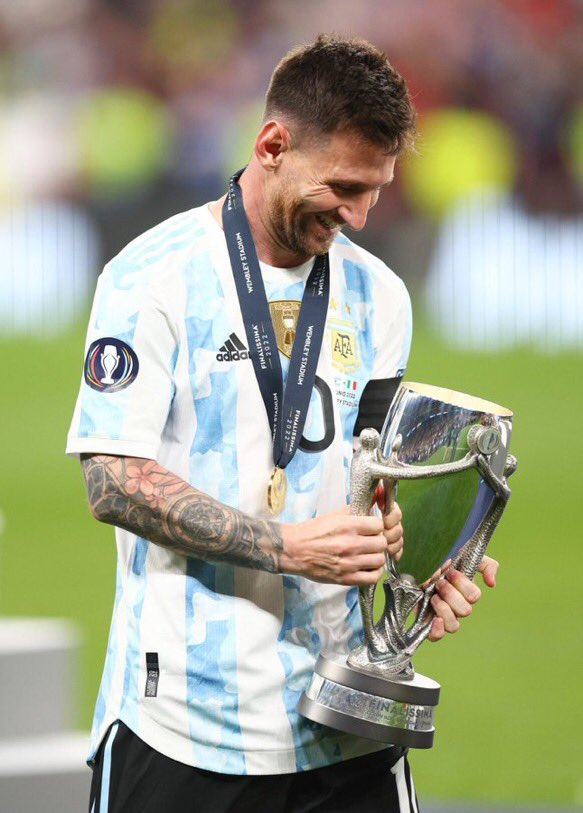

Paris Saint-Germain
- 2021–22: First season adjustments
- On 10 August, Messi joined French club Paris Saint-Germain.[321] He signed a two-year deal until June 2023 with an option for an extra year.[322] Messi chose 30 as his squad number, the same he wore as a teenager when he made his senior debut for Barcelona.[323] Messi made his debut for the club on 29 August, coming on as a substitute in the second half of a 2–0 away win over Reims in Ligue 1.[324] He made his first start and Champions League debut for the club in a 1–1 away draw against Club Brugge on 15 September.[325] Four days later, Messi made his home debut for PSG in a 2–1 win over Lyon.[326] On 28 September, he scored his first goal for the club, a strike from the edge of the 18-yard box in a 2–0 Champions League group stage win over Pep Guardiola's Manchester City.[327] On 21 November, Messi scored his first Ligue 1 goal in a 3–1 home victory over Nantes.[328] Later that month, he provided a hat-trick of assists for the fifth time in his career as PSG beat Saint-Étienne 3–1 away from home.[329] Having scored 40 goals at club and international level for the calendar year and helped Argentina win the 2021 Copa América, Messi received a record seventh Ballon d'Or on 29 November.
- 2022–23: Regaining form
- After adjusting to his new surroundings and settling in Paris, under new coach Christophe Galtier, Messi returned to his preferred free attacking role; being placed in his favoured position as the playmaker behind two strikers, in a attacking trident with Neymar and Kylian Mbappé, quickly regaining his form from his previous season by starting off the new season on 31 July by scoring PSG's first goal in a 4–0 victory over Nantes in the Trophée des Champions, winning his second trophy with PSG.[341]
International career
- 2021–2022: Copa América and World Cup triumphs
- On 14 June 2021, Messi scored from a free kick in a 1–1 draw against Chile in Argentina's opening group match of the 2021 Copa América in Brazil.[468] On 21 June, Messi played in his 147th match as he equalled Javier Mascherano's record for most appearances for Argentina in a 1–0 win over Paraguay in their third game of the tournament.[469] A week later, he broke the record for most appearances in an Argentina shirt when he featured in a 4–1 win against Bolivia in his team's final group match, assisting Papu Gómez's opening goal and later scoring two.[470] On 3 July, Messi assisted twice and scored from a free-kick in a 3–0 win over Ecuador in the quarter-finals of the competition.[471] On 6 July, in a 1–1 draw in the semi-finals against Colombia, Messi made his 150th appearance for his country and registered his fifth assist of the tournament, a cut-back for Lautaro Martínez, matching his record of nine goal contributions in a single tournament from five years earlier; he later netted his spot kick in Argentina's eventual 3–2 penalty shoot-out victory to progress to his fifth international final.[472][473] On 10 July, Argentina defeated hosts Brazil 1–0 in the final, giving Messi his first major international title and Argentina's first since 1993, as well as his nation's joint record 15th Copa América overall.[474][475] Messi was directly involved in 9 out of the 12 goals scored by Argentina, scoring four and assisting five; he was named the player of the tournament for his performances, an honour he shared with Neymar. He also finished as the tournament's top scorer with four goals tied with Colombia's Luis Díaz, with the Golden Boot awarded to Messi as he had more assists.[476][477] Messi at the 2022 FIFA World Cup On 9 September, Messi scored a hat-trick in a 3–0 home win over Bolivia in a 2022 World Cup qualifier which also moved him above Pelé as South America's top male international scorer with 79 goals.[478] In the 2022 Finalissima, the third edition of the CONMEBOL–UEFA Cup of Champions, at Wembley on 2 June 2022, Messi assisted twice in a 3–0 victory against Italy and was named player of the match, securing his second trophy for Argentina at the senior level.[479] Messi then followed this on 6 June with all five Argentina goals in a 5–0 victory in a friendly win over Estonia, overtaking Ferenc Puskás among the all-time international men's top scorers.[480] At the 2022 FIFA World Cup in Qatar, Messi scored a penalty in Argentina's opening game, a 2–1 defeat to Saudi Arabia, before scoring with a low 20-yard strike in their next match against Mexico in which Argentina won 2–0, also recording an assist on Enzo Fernández's goal.[481] In the last 16 game against Australia, Messi scored the opening goal in Argentina's 2–1 win in what was his 1,000th senior career appearance,[482] and became the most-capped male South American (CONMEBOL member) footballer of all time, surpassing the previous record set by Ecuador's Iván Hurtado, as well as surpassing and equalling several other FIFA World Cup and national team records.[483][484] In the quarter-final against the Netherlands, Messi assisted Argentina's first goal for Nahuel Molina with a reverse pass and then scored a penalty as the game finished 2–2 after extra time. Argentina won 4–3 in the penalty shootout, with Messi scoring the first penalty.[485] In the semi-final against Croatia, Messi made a record-equalling 25th World Cup finals appearance, drawing level with Germany's Lothar Matthäus, and scored the opening goal with a penalty before he assisted Argentina's third goal scored by Julián Álvarez in a 3–0 win;[486] with his 11th World Cup goal, Messi overtook Batistuta to become Argentina's all–time top–scorer at the World Cup.[487] Argentina advanced to the final against France, with Messi stating that it would be his final World Cup appearance.[488][489] In the 2022 FIFA World Cup final on 18 December, Messi made his record 26th World Cup finals appearance at Lusail Stadium. Messi scored Argentina's opening goal with a penalty, becoming in the process the first player since the last-16 round was introduced in 1986 to score a goal in each round of a single World Cup edition.[490] After Argentina's eventual two-goal lead was erased by France forward Kylian Mbappé, who scored twice inside two minutes, Messi would score again in extra-time to restore Argentina's lead, before Mbappé again drew France level. Tied 3–3 after extra-time, the match went to a penalty shoot-out. Messi scored Argentina's first goal in the shoot-out, with Argentina eventually winning 4–2, ending the nation's 36-year wait for the trophy.[491] Messi received the Golden Ball for player of the tournament, becoming the first player to win it twice. He finished second in the Golden Boot race with seven goals in seven games, one behind Mbappé.[490] With his appearance and two goals in the final, Messi overtook Matthaüs as the player with most appearances at the World Cup (26), and Pelé as the player with most direct goal contributions at the World Cup (21 – 13 goals and 8 assists).[492] The championship game was widely acclaimed as one of the best of all time, with media coverage heavily framing it as a duel between Messi and Mbappé.[493][494][495][496] Following the game, Messi confirmed that he had no plans to retire from the national team, saying "I want to continue playing as a champion".[497]



Summary
Lionel Messi, (born June 24, 1987, Rosario, Arg.), Argentine-born football (soccer) player. After making his formal debut with FC Barcelona during the 2004–05 season, when he became the youngest official player and goal scorer in the Spanish La Liga, he emerged as one of the game’s dominant players, known for his prolific goal scoring and precise ball control. Messi received an unprecedented four consecutive FIFA world men’s player of the year awards, from 2009 to 2012, and he won the award again in 2015 and 2019. In international competition he helped Argentina win a gold medal at the Beijing Olympics in 2008. He also led the Argentine national team to win the 2021 Copa América and the 2022 World Cup.For more information, check out Lionel Messi on Wikipedia